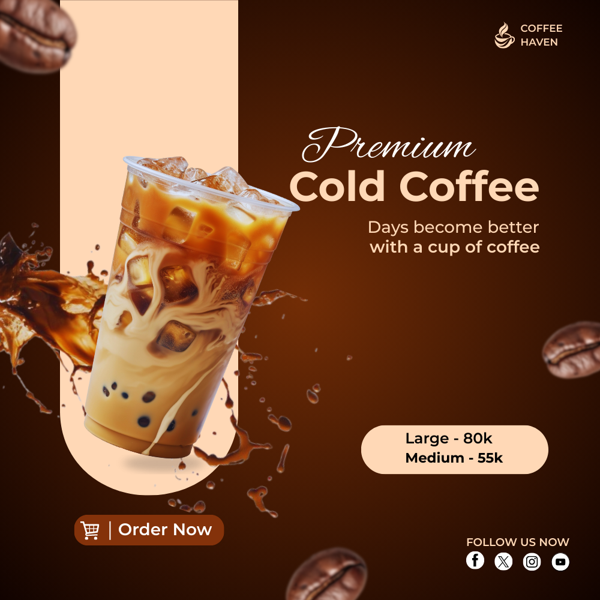

CONCEPTUAL CAMPAIGN
Coffee Culture Campaign
A minimalist poster series that reimagines coffee consumption as a mindful daily ritual. The project uses warm colors and abstract forms to communicate the sensory experience of coffee culture.
Year: 2023
Tools: Canva Pro, Visual Analysis, Digital Manipulation
Platform: Canva Pro
Dimensions: 1000 × 1000 pixels